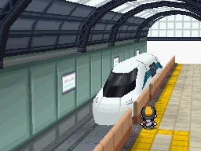
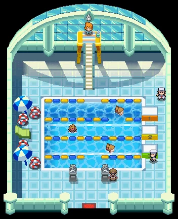
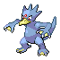
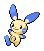

攻略大全 / 心金 / 魂银（详细图文） / 地图总览
华蓝市 → 5号道路
第 20 节 · 通关后 · 途经 24号道路、无人发电厂（再访）、25号道路、华蓝道馆
华蓝市
华蓝市是一座流水潺潺、鲜花盛开的美丽城市，位于4号道路、24号道路、9号道路和5号道路之间。本地的自行车店已经在满金市开了第二家分店。华蓝道馆在市中心，城镇北边有一个神秘的洞窟。
可遇到的宝可梦
- 冲浪
 角金鱼冲浪 · Lv.5-10 · 90%
角金鱼冲浪 · Lv.5-10 · 90% 金鱼王冲浪 · Lv.10 · 10%
金鱼王冲浪 · Lv.10 · 10%- 钓鱼
- 角金鱼破旧钓竿 · Lv.10 · 15%
 鲤鱼王破旧钓竿 · Lv.10 · 85%
鲤鱼王破旧钓竿 · Lv.10 · 85%- 角金鱼好钓竿 · Lv.20 · 40%
- 鲤鱼王好钓竿 · Lv.20 · 60%
- 角金鱼厉害钓竿 · Lv.40 · 70%
- 金鱼王厉害钓竿 · Lv.40 · 10%
- 鲤鱼王厉害钓竿 · Lv.40 · 20%
- 头锤（A 组树）
 咕咕头锤 · Lv.11-13 · 50%
咕咕头锤 · Lv.11-13 · 50% 榛果球头锤 · Lv.11-13 · 30%
榛果球头锤 · Lv.11-13 · 30%- 三蜜蜂头锤 · Lv.11-13 · 20%
- 头锤（B 组树）
- 咕咕头锤 · Lv.14-16 · 80%
- 三蜜蜂头锤 · Lv.14-16 · 20%
道具
- 之后再来
 机械零件华蓝道馆，道馆后面一堆游泳圈里（隐藏道具，探宝器探测不到）
机械零件华蓝道馆，道馆后面一堆游泳圈里（隐藏道具，探宝器探测不到）- 招式学习器03（水之波动）归还机械零件并打败道馆馆主小霞后由她给予
 金珠华蓝洞窟入口东偏南，岩壁上，从24号道路过去（隐藏道具，需要特殊能力）
金珠华蓝洞窟入口东偏南，岩壁上，从24号道路过去（隐藏道具，需要特殊能力）
华蓝道馆
黑衣男人
走进道馆时，一个穿深色制服的男人撞到了你。他停下来确认你没受伤，又说要是被人看见就麻烦了。他突然意识到自己已经被你看见了，命令你忘掉他，然后匆匆跑掉。
↓ 下一站：24号道路
24号道路
24号道路从华蓝市往北延伸到25号道路。这一带大部分是一条河，以及横跨河面的金珠桥。
训练家
- 火箭队手下 ₽1560
 大嘴蝠 Lv.39
大嘴蝠 Lv.39
可遇到的宝可梦
 喇叭芽草丛 · Lv.8, 10 · 早 60% · 日 0% · 夜 0%
喇叭芽草丛 · Lv.8, 10 · 早 60% · 日 0% · 夜 0%- 喇叭芽草丛 · Lv.8 · 早 0% · 日 35% · 夜 5%
 凯西草丛 · Lv.9 · 20%
凯西草丛 · Lv.9 · 20% 口呆花草丛 · Lv.12, 14 · 早 15% · 日 15% · 夜 0%
口呆花草丛 · Lv.12, 14 · 早 15% · 日 15% · 夜 0%- 口呆花草丛 · Lv.12 · 早 0% · 日 0% · 夜 10%
 毛球草丛 · Lv.8 · 早 5% · 日 0% · 夜 30%
毛球草丛 · Lv.8 · 早 5% · 日 0% · 夜 30%- 向日种子草丛 · Lv.10 · 早 0% · 日 30% · 夜 0%
 走路草草丛 · Lv.10 · 早 0% · 日 0% · 夜 30%
走路草草丛 · Lv.10 · 早 0% · 日 0% · 夜 30% 摩鲁蛾草丛 · Lv.14 · 早 0% · 日 0% · 夜 5%
摩鲁蛾草丛 · Lv.14 · 早 0% · 日 0% · 夜 5%- 冲浪
- 角金鱼冲浪 · Lv.5-10 · 90%
- 金鱼王冲浪 · Lv.10 · 10%
- 钓鱼
- 鲤鱼王破旧钓竿 · Lv.10 · 85%
- 角金鱼破旧钓竿 · Lv.10 · 15%
- 角金鱼好钓竿 · Lv.20 · 60%
- 鲤鱼王好钓竿 · Lv.20 · 40%
- 特殊
 直冲熊丰缘音乐 · Lv.9 · 20%
直冲熊丰缘音乐 · Lv.9 · 20%- 咕妞妞丰缘音乐 · Lv.8, 10 · 20%
 大牙狸神奥音乐 · Lv.9 · 20%
大牙狸神奥音乐 · Lv.9 · 20% 泳圈鼬神奥音乐 · Lv.8, 10 · 20%
泳圈鼬神奥音乐 · Lv.8, 10 · 20%
站住，小偷！
那个黑衣男人正在金珠桥上重整旗鼓。他一发现你，就想混进旁边的一对情侣里。上前质问他，他说自己的秘密任务是让发电厂的发电机停机，引起大混乱。他和你做了个交易：在对战中打败他，他就说出任务的关键。
对战结束后，他透露自己把机械零件藏在了华蓝道馆的一堆游泳圈旁边。他对输掉满不在乎，说他在城都的火箭队伙伴会来替他报仇，但很快意识到根本没人来帮他，赶紧逃跑了。
↓ 下一站：华蓝市
华蓝市
华蓝道馆
寻宝
道馆馆主暂时出去了，道馆里也没有训练家。搜索道馆后面的游泳圈，就能找回机械零件。
↓ 下一站：10号道路（北侧）
10号道路（北侧）
无人发电厂
恢复供电！
回到发电厂，和所长说话交还机械零件。他很高兴零件找回来了，送你招式学习器57（充电光束）作为奖励。
发电机修好、发电厂恢复运转后，一些支线任务就可以完成了。
↓ 下一站：金黄市
金黄市
模仿小子的家
回到金黄市，去城市西北边模仿小子的家。和她说话，得知她弄丢了最心爱的皮皮玩偶，她觉得玩偶在枯叶市的某个地方。
↓ 下一站：枯叶市
枯叶市
宝可梦爱好者俱乐部
回到枯叶市，去城镇西边的宝可梦爱好者俱乐部。和拿着皮皮玩偶的男人说明情况。他一直没能抓到自己的皮皮，就带了一个捡到的玩偶来代替。得知原主人很想念它，他很乐意交出遗失物。
来自远方的陌生人
离开俱乐部时，一个男人走过来，自我介绍说他叫大吾，是遥远的丰缘地区的冠军。他问你有没有听说过一只叫拉帝亚斯（心金）/拉帝欧斯（魂银）的宝可梦，并解释说他在调查这只丰缘的宝可梦为什么大老远跑到关都来。他还说这只宝可梦和宝石般的心之水滴有关，不知道这次的事是否与此有关。他转身离开，希望以后还能再见。
这次见面之后，宝可装置的地图会追踪这只宝可梦在关都各地的移动。
↓ 下一站：金黄市
金黄市

模仿小子的家
和女孩说话，还给她遗失物。她送你一张磁浮列车自由票，可以用来搭乘磁浮列车。她原来的家为了建车站被拆掉了，这张票是铁路公司的人给她的补偿。现在发电厂恢复运转，磁浮列车全年无休、24 小时往返于城都的满金市和关都的金黄市之间。海王丸号只在特定的日子开船，所以坐列车是两个地区之间最方便的交通方式。
↓ 下一站：紫苑镇
紫苑镇
广播塔
回到紫苑镇的广播塔，和北墙边的台长说话。电力恢复、广播塔正常播出，他保住了工作。他知道这要感谢你，于是送你一张扩充卡。有了这张扩充卡，宝可装置就能收听剩下的那个广播节目：宝可梦之笛频道。收听时要手动把圆形指针拨到圆盘的最上方。
↓ 下一站：25号道路
25号道路

相邻← 24号道路
25号道路从24号道路往东延伸。小路蜿蜒穿过树林，最后到达可以俯瞰大海的地方。海角小屋在东边。
训练家
- School Kid Dudley₽900走路草 Lv.45
- 迷你裙 Ellen₽704
 胖可丁 Lv.40布鲁皇 Lv.44
胖可丁 Lv.40布鲁皇 Lv.44 - School Kid Joe₽840
 蔓藤怪 Lv.44
蔓藤怪 Lv.44 水伊布 Lv.42
水伊布 Lv.42 - 野营男 Lloyd₽736
 尼多王 Lv.46
尼多王 Lv.46 - 迷你裙 Laura₽656
和迷你裙 Shannon 进行双打对战 臭臭花 Lv.38
臭臭花 Lv.38 美丽花 Lv.41
美丽花 Lv.41 比比鸟 Lv.41
比比鸟 Lv.41 - 迷你裙 Shannon₽672
和迷你裙 Laura 进行双打对战 派拉斯 Lv.38派拉斯 Lv.38
派拉斯 Lv.38派拉斯 Lv.38 派拉斯特 Lv.42
派拉斯特 Lv.42 - 理科男 Pat₽2256
 多边兽 Lv.47
多边兽 Lv.47 - 精英训练家 Kevin₽2760
 独角犀牛 Lv.48
独角犀牛 Lv.48 火恐龙 Lv.46卡咪龟 Lv.46
火恐龙 Lv.46卡咪龟 Lv.46
可遇到的宝可梦
- 凯西草丛 · Lv.9 · 10%
 波波草丛 · Lv.8 · 早 30% · 日 50% · 夜 0%
波波草丛 · Lv.8 · 早 30% · 日 50% · 夜 0%- 喇叭芽草丛 · Lv.10 · 早 30% · 日 30% · 夜 0%
- 喇叭芽草丛 · Lv.14 · 早 0% · 日 0% · 夜 5%
- 毛球草丛 · Lv.10 · 早 20% · 日 0% · 夜 0%
- 毛球草丛 · Lv.8 · 早 0% · 日 0% · 夜 30%
- 比比鸟草丛 · Lv.10 · 早 5% · 日 5% · 夜 0%
- 口呆花草丛 · Lv.14 · 早 5% · 日 5% · 夜 0%
- 口呆花草丛 · Lv.10 · 早 0% · 日 0% · 夜 5%
- 走路草草丛 · Lv.10 · 早 0% · 日 0% · 夜 30%
- 摩鲁蛾草丛 · Lv.8 · 早 0% · 日 0% · 夜 20%
- 冲浪
- 角金鱼冲浪 · Lv.5-10 · 90%
- 金鱼王冲浪 · Lv.10 · 10%
- 钓鱼
- 鲤鱼王破旧钓竿 · Lv.10 · 85%
- 角金鱼破旧钓竿 · Lv.10 · 15%
- 鲤鱼王好钓竿 · Lv.20 · 60%
- 角金鱼好钓竿 · Lv.20 · 40%
- 头锤（A 组树）
- 咕咕头锤 · Lv.10-11 · 50%
- 榛果球头锤 · Lv.10-11 · 30%
- 三蜜蜂头锤 · Lv.10-11 · 20%
- 头锤（B 组树）
- 咕咕头锤 · Lv.13-14 · 80%
- 三蜜蜂头锤 · Lv.13-14 · 20%
- 头锤：25号道路西北角的四棵树
- 懒人獭头锤 · Lv.10-14 · 30%
- 懒人獭头锤 · Lv.15-18 · 5%
- 三蜜蜂头锤 · Lv.10-14 · 65%
- 大量出现
- 卷卷耳大量出现 · Lv.8, 10 · 40%
- 特殊
- 直冲熊丰缘音乐 · Lv.8 · 20%
- 咕妞妞丰缘音乐 · Lv.8, 10 · 20%
- 大牙狸神奥音乐 · Lv.8 · 20%
- 泳圈鼬神奥音乐 · Lv.8, 10 · 20%
道具
 活力碎片道路西北角的台阶上（隐藏道具）
活力碎片道路西北角的台阶上（隐藏道具） 攻击增强剂树林迷宫的东北部（需要特殊能力）
攻击增强剂树林迷宫的东北部（需要特殊能力）- 金珠打败六名训练家后，精英训练家 Kevin 给予的奖品
接受挑战
这里遇到的第一位训练家是学生 Dudley。他们一伙六人，要你把他们全部打败。一路往东和每个人对战，最后打败迷你裙 Shannon 就完成挑战了。再打败怪人 Pat，然后和精英训练家 Kevin 说话领取奖品：一颗金珠。看过你的对战后，他想知道自己能有多少胜算，于是和你开战。
华蓝海角
打扰约会
到达海角时，你会看到华蓝道馆馆主正在旁边约会。她的约会对象跑掉了，她正要发火，却看到了你的城都徽章。她说你能拿到全部 8 枚徽章，一定很强，邀请你去华蓝道馆挑战。她自我介绍叫小霞，然后回城去了。
正辉的小屋
海角小屋是正辉的家，他不在时由爷爷看家。老人家很喜欢听孙子遇到的各种宝可梦。和他说话，他会描述一只想看的宝可梦。给他看对应种类的宝可梦，他会送你一颗进化石。
| 描述 | 宝可梦 | 奖励 | ||
|---|---|---|---|---|
| 「一种圆圆的蓝色宝可梦，头上长着叶子。」 | 走路草 | 叶之石 | ||
| 「一种对训练家非常忠心的宝可梦。听说是火属性的，很会吼叫。」 | 卡蒂狗 | 火之石 | ||
| 「一种有六条尾巴的可爱宝可梦。」 | 六尾 | |||
| 「眼睛又大又圆的那种宝可梦。会用可爱的声音唱摇篮曲！」 | 胖丁 | 胖丁 | 不变之石 | |
| 「一种舌头很长的宝可梦。腿前面有环状的花纹。」 | 大舌头 | |||
| 「身体黄色、脸颊鲜红的那种宝可梦……我好想看看它进化前的样子。」 | 皮丘 | 皮丘 | 雷之石 | |
| 「城都的一种圆圆的蓝色宝可梦。正辉说它的尾巴末端像个浮标。它的肚子是白的，只有肚子。」 | 玛力露 | 水之石 | ||
| 「一种身体里有红色球体的海洋宝可梦。就是那种星星形状的。听说它晚上会出现。」 | 海星星 | |||
↓ 下一站：华蓝市
华蓝市
华蓝道馆

馆主：小霞
假小子美人鱼
华蓝道馆专精水属性宝可梦。水属性招式对火、地面、岩石属性效果绝佳，而水属性宝可梦怕电和草属性招式。
道馆里有一个大游泳池。挑战者可以绕着泳池走，也可以用冲浪横渡。第二个船员 Eddie 在把走近的挑战者拉进对战时，可能会无意中挡住建筑后面的路。所以大多数人至少要横渡泳池的远端，冲浪经过泳裤小伙和泳衣美女、绕过泳道分隔线，才能到达馆主那里。
电属性攻击是小霞队伍的一大弱点。只有地面属性的沼王不受电属性招式影响，还能用地震对电属性宝可梦造成更多伤害。求雨生效时，水属性招式威力提高，打雷的命中率也会变成 100%。草属性招式同样好用，但拉普拉斯和宝石海星都能用冰属性攻击反击草属性宝可梦。另外，拉普拉斯怕格斗和岩石属性招式，宝石海星则怕虫、幽灵、恶属性招式。
训练家
- 船工 Parker₽1376
 墨海马 Lv.43
墨海马 Lv.43 海刺龙 Lv.43
海刺龙 Lv.43 - 船工 Eddie₽1536
 玛力露丽 Lv.48
玛力露丽 Lv.48 - 比基尼大姐姐 Diana₽768

哥达鸭 Lv.48 - 比基尼大姐姐 Joy₽768
 刺甲贝 Lv.48
刺甲贝 Lv.48 - 比基尼大姐姐 Briana₽736金鱼王 Lv.46金鱼王 Lv.46
道馆馆主 小霞 奖金 ₽6480
对战结束后，小霞会授予你蓝色徽章。她还会送你招式学习器03（水之波动）作为奖品。
↓ 下一站：5号道路
5号道路
5号道路是一条风景优美的下坡路，从华蓝市通往金黄市。地区两条地下通道中的第一条从这里开始，往南穿过金黄市地下，从6号道路出来。
可遇到的宝可梦
- 波波仅心金草丛 · Lv.13-15 · 早 60% · 日 60% · 夜 0%
- 波波仅魂银草丛 · Lv.13, 15 · 早 40% · 日 40% · 夜 0%
- 走路草仅心金草丛 · Lv.13 · 早 0% · 日 0% · 夜 60%
- 走路草仅魂银草丛 · Lv.13 · 早 0% · 日 0% · 夜 30%
- 臭臭花草丛 · Lv.15 · 早 0% · 日 0% · 夜 10%
 喵喵仅魂银草丛 · Lv.14 · 早 20% · 日 20% · 夜 0%
喵喵仅魂银草丛 · Lv.14 · 早 20% · 日 20% · 夜 0%- 喵喵仅魂银草丛 · Lv.13 · 早 0% · 日 0% · 夜 30%
- 凯西草丛 · Lv.12, 14 · 10%
- 喇叭芽草丛 · Lv.13 · 早 30% · 日 30% · 夜 0%
- 喇叭芽草丛 · Lv.14 · 早 0% · 日 0% · 夜 20%
- 头锤（A 组树）
- 咕咕头锤 · Lv.11-13 · 50%
- 榛果球头锤 · Lv.11-13 · 30%
- 三蜜蜂头锤 · Lv.11-13 · 20%
- 头锤（B 组树）
- 咕咕头锤 · Lv.14-16 · 80%
- 三蜜蜂头锤 · Lv.14-16 · 20%
- 特殊
- 正电拍拍丰缘音乐 · Lv.13 · 20%

負电拍拍丰缘音乐 · Lv.14 · 20% 小猫怪神奥音乐 · Lv.13-14 · 40%
小猫怪神奥音乐 · Lv.13-14 · 40%
道具
 洁净之符原宝可梦培育屋建筑里的老奶奶给予
洁净之符原宝可梦培育屋建筑里的老奶奶给予
地下通道
地下通道原本被封锁了，因为停电时隧道里不安全。
道具
 全复药北端，三个交通锥那一排往南五步（隐藏道具）
全复药北端，三个交通锥那一排往南五步（隐藏道具）- 招式学习器64（大爆炸）隧道中段那个饥饿的男人给予
 特攻强化隧道中段，右边那个交通锥上（隐藏道具）
特攻强化隧道中段，右边那个交通锥上（隐藏道具）
饿到发火
和隧道中段的男人说话，他说这种地方总会招来爱惹事的坏人，让他很生气。接着他注意到你的愤怒馒头，问能不能给他。把馒头给他，他吃完心情就好了，送你招式学习器64（大爆炸）作为谢礼。
↓ 本篇到此结束：继续下一页
原文：Bulbapedia《Walkthrough:Pokémon HeartGold and SoulSilver/Part 20》（修订版本 4453059，），作者见原文页面历史。本页由 Eli 的杂货间翻译为中文，并有改动（重新排版、精简部分图注）。原文与译文均以 CC BY-NC-SA 2.5 授权。配图来自原站，版权归原作者与游戏厂商；地图截图和人物图来自 Bulbagarden Archives，游戏画面版权归 Nintendo / Game Freak / The Pokémon Company。